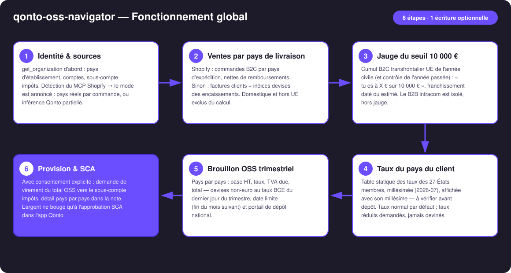
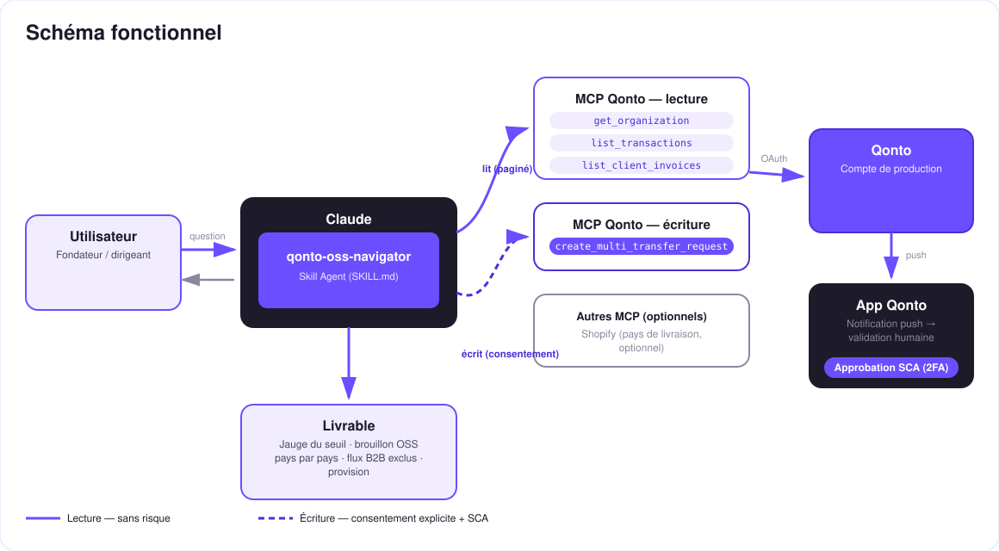

La TVA e-commerce européenne, avant qu'elle te rattrape — jauge du seuil des 10 000 €, brouillon OSS trimestriel, provision sous SCA.
Dès 10 000 € de ventes B2C transfrontalières UE sur l'année (seuil unique, toutes ventes à distance cumulées — pas par pays), la TVA se déclare au taux du pays du client, via le guichet unique OSS. La plupart des e-commerçants le découvrent trop tard. Le skill transforme le compte Qonto en vigie OSS :
Shopify si connecté (pays réel par commande), sinon inférence Qonto — annoncée comme partielle, jamais maquillée en couverture complète.
Cumul B2C transfrontalier de l'année (et contrôle de l'année passée) : « tu es à X € sur 10 000 € », franchissement daté ou estimé.
Pays par pays : base HT, taux du pays du client (table millésimée des 27 États), TVA due, total, date limite, portail de dépôt.
Demande de virement vers le sous-compte impôts — l'argent ne bouge qu'après l'approbation SCA dans l'app Qonto.
Et les ventes B2B intracommunautaires (numéro de TVA valide) ? Exclues de l'OSS — autoliquidation, signalées à part, jamais mélangées à la jauge.
| Prérequis | Détail | Obligatoire |
|---|---|---|
| Compte Qonto production | Le skill s'adapte à toute organisation — get_organization d'abord, zéro donnée en dur | ✅ |
| Pays | Pensé pour un vendeur établi en UE. Seuil et taux : règles européennes, valables pour tous les pays Qonto. Seul le portail de dépôt est national (France : impots.gouv.fr, guichet OSS) | ℹ️ détecté |
| MCP Qonto connecté | Connecteur officiel (claude.ai / Claude Desktop), login OAuth | ✅ |
| MCP Shopify | Optionnel, détecté dynamiquement : pays de livraison réels (list-orders, run-analytics-query — noms à tirets). Absent → mode Qonto pur, annoncé comme partiel | ⭕ recommandé |
| Sous-compte « impôts » | Créé une fois dans l'app (le MCP ne sait pas créer de compte). Détecté par son nom : taxe / tax / impôt / TVA / OSS | ⭕ recommandé — sinon calculs seuls |
| Ventes transfrontalières UE | Sans ventes B2C vers d'autres pays UE : le skill le dit et s'arrête — pas de jauge inventée | ℹ️ détecté |

qonto-vat-return) et exports hors UE exclus du calcul
Le modèle de sécurité, pas une limitation : la lecture est sans risque ; l'écriture exige le consentement explicite dans la conversation et ne produit qu'une demande. Seule la SCA (2FA) du titulaire, dans l'app Qonto, déplace l'argent. Ni Claude ni le MCP ne le peuvent.
| Règle | Détail |
|---|---|
| Seuil unique | 10 000 € HT / année civile, toutes ventes à distance B2C UE cumulées (biens + services numériques TBE) — évalué sur l'année en cours et l'année précédente |
| Sous le seuil | TVA du pays du vendeur autorisée (option OSS volontaire possible, engagement 2 ans) |
| Au-dessus | TVA du pays du client, dès la transaction qui franchit le seuil — immatriculation pays par pays OU guichet unique OSS |
| Déclaration OSS | Trimestrielle, dépôt avant la fin du mois suivant le trimestre : 30/04 · 31/07 · 31/10 · 31/01 — corrections des trimestres passés dans la déclaration courante ; devises non-euro converties au taux BCE du dernier jour du trimestre |
| Exclusions | Ventes domestiques (→ qonto-vat-return) · B2B intracom (autoliquidation, état récapitulatif — pas l'OSS) · exports hors UE |
| Taux | États membres |
|---|---|
| 17 % | Luxembourg |
| 18 % | Malte |
| 19 % | Allemagne · Chypre |
| 20 % | Autriche · Bulgarie · France |
| 21 % | Belgique · Tchéquie · Espagne · Lituanie · Lettonie · Pays-Bas · Roumanie |
| 22 % | Italie · Slovénie |
| 23 % | Irlande · Pologne · Portugal · Slovaquie |
| 24 % | Estonie · Grèce |
| 25 % | Danemark · Croatie · Suède |
| 25,5 % | Finlande |
| 27 % | Hongrie |
Le skill applique le taux normal par défaut ; si les produits peuvent relever d'un taux réduit (livres, alimentaire, articles enfants…), il le signale et demande — jamais deviné.
| Sortie | Format | Quand |
|---|---|---|
| Réponse dans la conversation | Tableaux markdown (jauge, brouillon pays par pays, flux exclus) | Toujours — c'est la base |
| Dashboard interactif | Fichier/artifact HTML : barre de jauge, tableau par pays, frise des trimestres | Si l'hôte affiche les fichiers (artifacts claude.ai, Claude Desktop, Claude Code) ; repli automatique sur les tableaux sinon |
| Note de la demande Qonto | Détail pays par pays joint à la demande, visible à l'approbation SCA | À chaque provision créée |
La démo ≤ 3 min jointe à la PR suit le storyboard : le piège du seuil → la jauge → le brouillon OSS pays par pays → la provision + approbation SCA filmée sur téléphone → le dashboard. Le script détaillé de tournage est conservé en interne (hors dépôt).
| Idée | Effort | Note |
|---|---|---|
| IOSS (importations ≤ 150 €) | Moyen | Le pendant import du guichet unique — même moteur, autre régime |
| Taux réduits par catégorie produit | Moyen | Croiser les produits Shopify avec les catégories à taux réduit par pays |
| Rappel d'échéance OSS dans le calendrier (MCP calendrier détecté dynamiquement) | Faible | Multi-MCP optionnel, dans l'esprit du kickoff |
| Historique de jauge trimestre par trimestre | Faible | Réutilise les fenêtres de scan existantes |
| WooCommerce / autres sources de commandes | Moyen | Même interface : « pays de livraison par commande » |
decline_request après chaque test (request_type: "multi_transfers", pluriel)